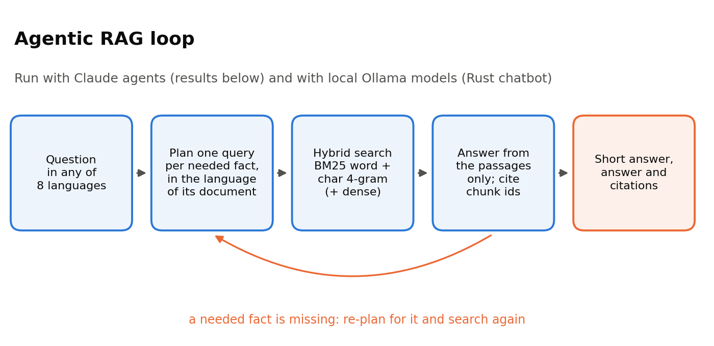
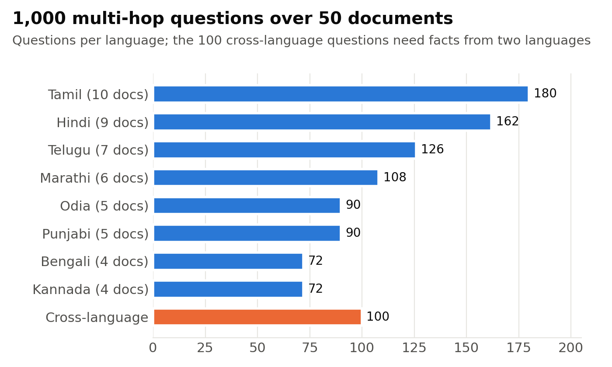
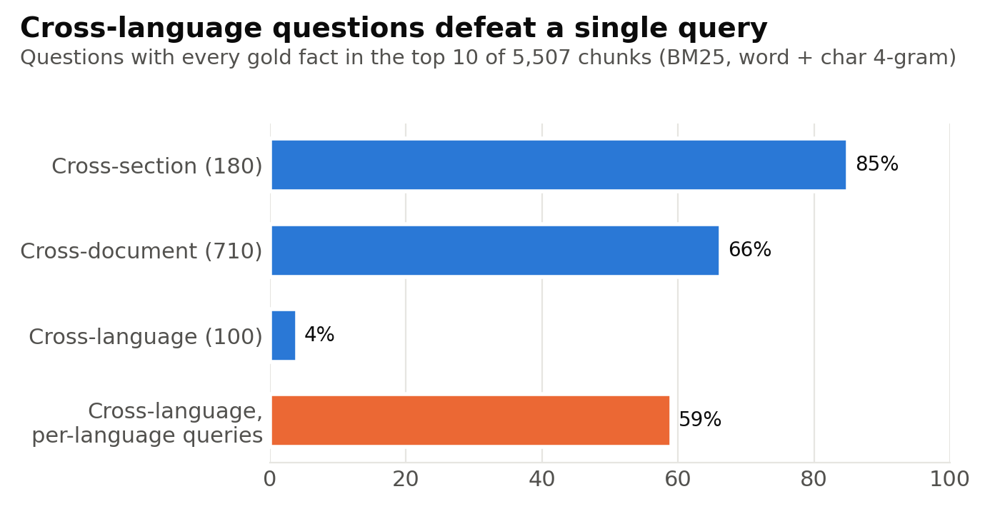
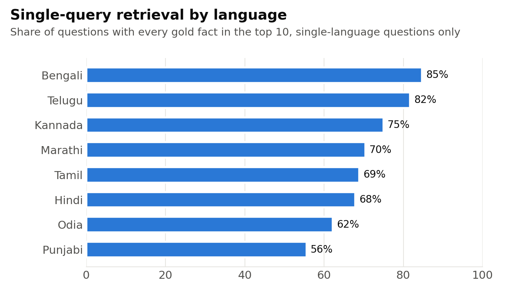

RUST × RAG × INDIC LANGUAGES
Python got your RAG prototype running. Now build the whole thing in Rust.
This is a from-the-index-up tutorial for a multilingual retrieval-augmented generation system: Unicode-aware tokenization, section-aware chunking, BM25, character n-grams, dense embeddings, reciprocal-rank hybrid retrieval, local Ollama generation, agentic multi-hop search and evaluation — all in one Rust crate.
No toy English FAQ. The repository ships a 675,913-word HR-policy corpus in eight Indian languages and a 1,000-question multi-hop test set, so every design decision is exercised against real multilingual retrieval problems.
1. Why Rust?
Because a RAG system is much more than an LLM call. It is a text pipeline, an index, a ranker, a vector store, an orchestration loop, an evaluator and an application. Once the demo becomes a product, the code around the model often matters as much as the prompt.
Rust is attractive here for five practical reasons.
- You can ship one native executable. The same crate can build the index, search it, run chat and evaluate a test set.
- You control Unicode behavior explicitly. That matters for Indic scripts, where simplistic ASCII-oriented or regex-oriented tokenization can silently damage words.
- Your data structures are visible. Posting lists, chunk metadata and dense vectors are ordinary Rust values with explicit memory ownership.
- The benchmark implementation can become the application implementation. There is no mandatory rewrite from a notebook prototype into a different serving language.
- Performance engineering remains available. This tutorial deliberately keeps the first implementation straightforward, but the language gives you safe threading, SIMD-friendly arrays and predictable allocation when you later need them.
2. What we are building
The finished pipeline is deliberately conventional. That is useful: every component can be understood independently, measured independently and replaced independently.

Indic HR Markdown
↓
Unicode normalization + tokenization
↓
section-aware chunks
↓
word BM25 ─────┐
char-4g BM25 ──┼─→ reciprocal-rank fusion ─→ top chunks
BGE-M3 dense ──┘ ↓
Ollama chat
↓
answer + cited chunks
↓
retrieval / answer metricsFor ordinary questions, the system can retrieve once and answer once. For multi-hop questions, the agentic strategy first asks the model to decompose the question into fact-level searches, runs those searches in the likely document languages, answers from the accumulated context, and re-plans only when information is still missing.
3. Meet the multilingual Indic HR corpus
The fictional company is Suryodaya Integrated Solutions Pvt. Ltd. The corpus contains 50 long HR-policy manuals written directly in eight Indian languages rather than eight translations of one English source.

The repository contains:
- Bengali: 4 documents
- Hindi: 9 documents
- Kannada: 4 documents
- Marathi: 6 documents
- Odia: 5 documents
- Punjabi: 5 documents
- Tamil: 10 documents
- Telugu: 7 documents
Alongside the 675,913 words are 6,315 structured fact records and 1,000 multi-hop questions: 710 cross-document, 180 cross-section, 100 cross-language and 10 within-section questions.
One cross-language question asks, in Bengali, for a background-verification deadline in a Bengali recruitment policy and then asks how many working days longer it is than the corresponding Telugu deadline:
সূর্যোদয় ইন্টিগ্রেটেড সলিউশনস-এর বাংলা নিয়োগ নির্দেশিকা অনুযায়ী সম্পূর্ণ পূর্বতন কর্মজীবন যাচাই প্রক্রিয়া সম্পন্ন করার জন্য বরাদ্দ সময়সীমা কত, এবং তেলুগু নির্দেশিকায় উল্লিখিত নেপথ্য ধৃবীকরণ (నేపథ్య ధృవీకరణ)-র প্রমিত সময়সীমার (సాధారణ కాలపరిమితి) তুলনায় তা কত কার্যদিবস বেশি?
The reference answer is 14 working days, which is 4 working days longer than the Telugu policy's 10-day standard. A single lexical query written in Bengali has no reason to magically recover the Telugu evidence. That is exactly the sort of failure the later agentic strategy is meant to attack.
4. Start with one small Rust crate
The primary project lives under rust/. Its dependencies are intentionally modest: error handling, serialization, command-line parsing, a blocking HTTP client, binary persistence and zip handling.
Before starting, install a current stable Rust toolchain and Ollama. Confirm that all three commands are visible:
rustc --version
cargo --version
ollama --versionStart the Ollama application (or ollama serve where appropriate). The lexical BM25 sections do not need a model server, but dense retrieval and generation do.
[package]
name = "hr-rag"
version = "0.1.0"
edition = "2021"
description = "Multilingual RAG chatbot and evaluator for the Suryodaya Indic HR multi-hop QA benchmark"
[dependencies]
anyhow = "1"
bincode = "1.3"
clap = { version = "4", features = ["derive"] }
serde = { version = "1", features = ["derive"] }
serde_json = "1"
ureq = { version = "2", default-features = false, features = ["json"] }
zip = { version = "2", default-features = false, features = ["deflate"] }There is no external search engine here. BM25 is implemented in the crate so you can see the postings and scoring logic. Dense inference is delegated to Ollama because the tutorial is about the RAG system, not writing a neural inference runtime.
Build and run the unit tests before indexing anything:
cd rust
cargo test
cargo build --release5. Unicode is not a preprocessing footnote
A multilingual system can fail before retrieval even begins. Indic digits need normalization for numeric evaluation, and combining marks must remain inside words. The implementation therefore defines exactly what counts as a token character.
const DIGIT_BLOCKS: [u32; 8] = [
0x0966, 0x09E6, 0x0A66, 0x0AE6,
0x0B66, 0x0BE6, 0x0C66, 0x0CE6,
];
pub fn ascii_digit(c: char) -> char {
let u = c as u32;
for b in DIGIT_BLOCKS {
if u >= b && u < b + 10 {
return char::from_u32('0' as u32 + (u - b)).unwrap();
}
}
c
}
fn is_word_char(c: char) -> bool {
let u = c as u32;
c.is_alphanumeric()
|| c == '_'
|| (0x0900..=0x0963).contains(&u)
|| (0x0966..=0x0D7F).contains(&u)
|| c == '\u{200C}'
|| c == '\u{200D}'
}The tokenizer then emits maximal runs of these characters. A unit test checks that Devanagari and Bengali words survive intact while Bengali digits are normalized:
#[test]
fn tokens_keep_matras() {
assert_eq!(
word_tokens("परिवीक्षा अवधि। মোট ১১২টি পদ"),
vec!["परिवीक्षा", "अवधि", "মোট", "112টি", "পদ"]
);
}This is one of the strongest reasons to teach the system in Rust: the text behavior is not hidden behind a package default. You can inspect it, test it and change it deliberately.
6. Chunk documents without throwing away their structure
Each Markdown policy contains headings. The chunker tracks the current heading path and groups paragraphs that share it. The target is 220 words per merged chunk.
Important: 220 words is a merge target, not a hard truncation rule. If one original paragraph itself exceeds 220 words, the paragraph remains intact. That preserves source structure and keeps the Rust output aligned with the reference implementation.
pub const MAX_WORDS: usize = 220;
for (h, p) in blocks {
let n = p.split_whitespace().count();
if cur_h.as_ref() != Some(&h) || cur_n + n > MAX_WORDS {
if !cur.is_empty() {
let hd = cur_h.as_ref()
.map(|v| v.join(" > "))
.unwrap_or_default();
out_raw.push((hd, cur.join("\n")));
}
cur.clear();
cur_n = 0;
cur_h = Some(h);
}
cur.push(p);
cur_n += n;
}The corpus currently produces 5,507 chunks. Every chunk carries a stable ID, language, document identifier, document title, heading path and text.
pub struct Chunk {
pub id: String,
pub language: String,
pub document: String,
pub doc_title: String,
pub heading: String,
pub text: String,
}7. Implement BM25 instead of treating search as an API call
The index stores document length, average length, postings and IDF values. During construction, term frequency is counted once per document and converted into posting entries.
pub struct Bm25 {
k1: f32,
b: f32,
avg: f32,
len: Vec<u32>,
post: HashMap<String, Vec<(u32, u32)>>,
idf: HashMap<String, f32>,
}The implementation uses k1 = 1.4 and b = 0.75. For each distinct query token, it adds the standard BM25 contribution to every matching chunk:
*sc.entry(i).or_default() +=
idf * f * (self.k1 + 1.0)
/ (f + self.k1 *
(1.0 - self.b + self.b * dl / self.avg));This gives us a strong lexical baseline with no external database and, just as importantly, a baseline whose behavior is completely inspectable.
8. Add character 4-grams for a second lexical view
Word tokenization is useful, but morphology and spelling variation can make exact-token retrieval brittle. The repository therefore builds a second BM25 index over character 4-grams.
pub fn char_grams(s: &str) -> Vec<String> {
let n = 4;
let mut out = Vec::new();
for w in word_tokens(s) {
let cs: Vec<char> = format!("#{w}#").chars().collect();
if cs.len() <= n {
out.push(cs.iter().collect());
} else {
for i in 0..=cs.len() - n {
out.push(cs[i..i + n].iter().collect());
}
}
}
out
}The # boundary markers preserve word-edge information. The final lexical retriever ranks with both word BM25 and character BM25, then fuses the two lists.
9. Add multilingual dense embeddings without turning Rust into an inference framework
Ollama provides the model process. Rust sends batches of chunk text to /api/embed, normalizes the returned vectors and stores them row-major in the same on-disk index.
pub fn embed(&self, model: &str, inputs: &[String])
-> Result<Vec<Vec<f32>>>
{
let v = self.post(
"/api/embed",
json!({"model": model, "input": inputs, "truncate": true}),
)?;
let arr = v["embeddings"].as_array()
.context("no `embeddings` in /api/embed response")?;
arr.iter()
.map(|e| e.as_array()
.context("bad embedding")
.map(|x| x.iter()
.map(|f| f.as_f64().unwrap_or(0.0) as f32)
.collect()))
.collect()
}The tutorial defaults to bge-m3 because it is multilingual. You can swap the embedding model without changing the retrieval architecture.
Embedding setup:
ollama pull bge-m3
cd rust
cargo run --release -- index
cargo run --release -- embed --model bge-m310. Fuse lexical and dense rankings with RRF
Raw BM25 and cosine scores live on unrelated scales. Rather than normalize scores heuristically, the retriever combines ranked lists with reciprocal rank fusion (RRF).
const RRF_K: f32 = 60.0;
for list in &lists {
for (rank, &i) in list.iter().enumerate() {
*fused.entry(i).or_default() +=
1.0 / (RRF_K + rank as f32 + 1.0);
}
}Hybrid mode therefore combines three signals:
- word-token BM25
- character-4-gram BM25
- dense cosine ranking
The same search function can optionally restrict candidates to a known language or document. That becomes important in the agentic strategy, where a planner can say, in effect, “search for this fact specifically in Telugu.”
11. Measure retrieval before you add an LLM
This is a rule worth keeping: if retrieval does not contain the answer, generation cannot reliably recover it from the context.
cd rust
cargo run --release -- index
cargo run --release -- retrieval --mode bm25 --k 10The stored reference single-shot global retrieval baseline reaches about 80.8% supporting-fact recall@10 and 63.8% all-facts@10. On the 100 cross-language questions, all-facts@10 drops to about 4%.


12. Call a local chat model and constrain the output
The chat client sends ordinary JSON to Ollama. Temperature is fixed at zero, a seed is provided, and a JSON schema can constrain the response.
let mut body = json!({
"model": model,
"messages": messages,
"stream": false,
"keep_alive": "30m",
"options": {
"temperature": 0.0,
"seed": 42,
"num_ctx": num_ctx
}
});
if let Some(schema) = schema {
body["format"] = schema.clone();
}The answer schema requests four fields: a minimal short answer, a concise explanation, cited chunk IDs and a description of any missing information. Requiring missing_info is what makes a second retrieval round possible.
13. Build the simple RAG path first
The simple strategy is exactly what a baseline should be: retrieve with the original question and answer from the top context.
question
↓
search(question)
↓
top chunks
↓
answer(question, chunks)This gives you a clean comparison point. If the agentic strategy later improves results, you know the gain came from decomposition and targeted retrieval rather than from changing everything at once.
14. Turn multi-hop retrieval into a plan-retrieve-answer loop
A cross-document question may need two or three independent facts. A cross-language question may need those facts in different scripts. The agentic strategy therefore asks for a small structured search plan.
{
"queries": [
{"query": "সম্পূর্ণ পূর্বতন কর্মজীবন যাচাই সময়সীমা", "language": "Bengali"},
{"query": "నేపథ్య ధృవీకరణ సాధారణ కాలపరిమితి", "language": "Telugu"}
]
}Each planned query is short and targeted. The retriever can filter by the requested language, which prevents one script from dominating the search space. Retrieved passages are deduplicated, capped to the context budget and passed to the answer model.
If the answer model returns a non-empty missing_info field, the planner receives that description and generates new searches for the missing facts only. The number of rounds is bounded.
plan facts
↓
search each fact in its likely language
↓
deduplicate + cap context
↓
answer
↓
missing information?
├─ no → finish
└─ yes → plan missing facts → retrieve again → answer againThe core loop in rag.rs is correspondingly small:
let mut lists = vec![
r.search(q, None, None, c.max_ctx.max(c.k), c.mode)?
];
let mut missing: Option<String> = None;
for round in 0..c.rounds.max(1) {
let plan = self.plan(q, missing.as_deref())?;
p.llm_calls += 1;
for pq in &plan {
let lang = LANGUAGES.iter()
.find(|l| l.eq_ignore_ascii_case(pq.language.trim()))
.copied();
lists.push(r.search(&pq.query, lang, None, c.k, c.mode)?);
}
// Merge result lists into the bounded context.
// Then answer and stop if nothing is missing.
let a = self.answer(q, &ids)?;
p.llm_calls += 1;
let miss = a.missing_info.trim().to_string();
self.fill(p, a, &ids);
if miss.is_empty() || round + 1 == c.rounds.max(1) {
break;
}
missing = Some(miss);
}This is deliberately a small agent. There is no generic tool universe and no unbounded loop. The agent has one job: improve evidence acquisition for a known corpus.
15. Run it as an interactive Rust application
Pull the models once:
ollama pull bge-m3
ollama pull gemma3:4bBuild the index and embeddings:
cd rust
cargo build --release
cargo run --release -- index
cargo run --release -- embed --model bge-m3Then chat:
cargo run --release -- chat \
--model gemma3:4b \
--mode hybrid \
--strategy agentic \
--verboseAsk in any of the eight corpus languages. Verbose mode prints the planned queries and retrieved chunk IDs, which is useful while debugging a retrieval failure.
16. Use the retriever by itself
Search is exposed as a first-class command because debugging RAG through generated answers is slow and ambiguous.
# Tamil query, lexical retrieval
cargo run --release -- search \
"மகப்பேறு விடுப்பு" --mode bm25 --k 5
# Bengali query, hybrid retrieval
cargo run --release -- search \
"মাতৃত্বকালীন ছুটি" --mode hybrid --k 5
# Restrict to one language
cargo run --release -- search \
"notice period" --lang Tamil --mode dense --k 5Every result prints its stable chunk ID, language, policy title, heading path and text.
17. Evaluate retrieval and answering separately
The test set stores the supporting facts for every question. Those facts are mapped back to chunk IDs so the evaluator can report whether the model ever received the required evidence.
This lets one run produce several distinct signals:
- all facts retrieved: every supporting fact was present in retrieved context
- supporting-fact recall: fraction of gold facts that appeared in retrieval
- all facts cited: generated citations cover every mappable supporting fact
- numeric match: every number in the reference short answer appears in the system answer
- external judge accuracy: optional labels from a separate judge file
- LLM calls and latency: how much orchestration was required
Run a quick 100-question slice by taking every tenth question:
cargo run --release -- eval \
--model gemma3:4b \
--strategy agentic \
--mode hybrid \
--every 10 \
--out runs/gemma3-4b-agentic-hybrid.jsonlThen run all 1,000 by removing --every 10. The output is JSONL and completed IDs are skipped on restart, so interrupted runs resume instead of overwriting earlier work.
18. Re-score without rerunning generation
Predictions are stored separately from scoring. That is important when the generator run is expensive but your evaluation logic changes.
cargo run --release -- score \
runs/gemma3-4b-agentic-hybrid.jsonl \
--report runs/gemma3-4b-agentic-hybrid.mdYou can export a judge input file or merge external judge labels later. Retrieval metrics still come from the gold evidence mapping, so you can distinguish “the retriever never supplied the fact” from “the model saw the fact and answered badly.”
19. Use the same system as a Rust library
The CLI is not the architecture. The owned Session API opens the corpus, maintains the store, talks to Ollama and exposes search, ask and evaluation operations to other Rust code or the evcxr Jupyter kernel.
use hr_rag::*;
let d = hr_rag::data::locate("../")?;
let mut s = Session::open_dirs(
&d.corpus,
d.testset.as_deref(),
&d.work,
"http://localhost:11434",
)?;
s.ensure_models(&["bge-m3", "gemma3:4b"])?;
s.embed("bge-m3")?;
let answer = s.ask(
"नोटिस अवधि कितनी है?",
&Config::new("gemma3:4b"),
)?;
println!("{answer}");That is the payoff of keeping the implementation in one crate: the tutorial code, CLI code and notebook code share the same core types.
20. The complete source map
rust/src/
text.rs normalization, tokens, digits, n-grams, script detection
chunk.rs Markdown structure → stable chunks
index.rs BM25 postings + dense vector store
retrieve.rs lexical / dense / hybrid retrieval
ollama.rs local model HTTP client
rag.rs simple + agentic RAG strategies
eval.rs gold mapping + scoring
session.rs reusable owned API
data.rs locate corpus/test set from folder or zip
main.rs CLINothing prevents replacing individual parts. Swap BM25 parameters. Change the dense model. Add a reranker. Parallelize embeddings. Move vectors to another store. Replace Ollama. The value of the tutorial is that you can identify exactly where each change belongs.
21. What the included results are for
The repository includes reference retrieval outputs, agentic predictions, judge verdicts and search logs. They are there to make the tutorial inspectable: you can compare your local run against known artifacts rather than trusting a screenshot.
The headline retrieval result is intentionally sobering. A single query can do reasonably well overall, but cross-language multi-hop retrieval collapses. That makes the corpus useful for teaching orchestration rather than merely showing that an embedding model can find semantically similar text.
22. Where to take the Rust implementation next
Once the basic system is correct, Rust gives you several natural next steps without changing the architecture:
- parallelize embedding batches and independent agent search calls
- replace the linear dense scan with an approximate-nearest-neighbor index
- memory-map large indexes instead of deserializing the entire store
- add a learned reranker after hybrid retrieval
- expose the library through an HTTP service
- add tracing and per-stage latency metrics
- stream generation while retaining structured citations
- benchmark memory, cold-start and throughput against an equivalent Python service
Those are engineering extensions. The tutorial stops before pretending they have been benchmarked when they have not.
23. Keep the GitHub repository clean
This repository intentionally contains no dotfiles or dot-directories. That means there is no .gitignore and no custom Pages workflow.
After running locally, Cargo and the evaluator can create directories such as rust/target/, rust/store/, rust/runs/ or hr_rag_work/. Those are generated outputs; do not upload them when updating the source repository.
For GitHub Pages, publish directly from the main branch and the /docs folder. The tutorial is static HTML and CSS, so no build framework is necessary.
24. The point of the exercise
You now have the whole RAG stack in view. Not “call a framework and hope.” Not “here is a notebook with twenty hidden abstractions.” The corpus is multilingual, the retrieval failures are measurable, the Unicode behavior is explicit, the hybrid ranker is visible, the agent has a bounded job, and the application is a Rust binary.
That is why Rust is interesting for RAG: not because it replaces the model, but because it lets the rest of the system stop being disposable glue.